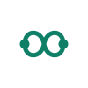

Switchboard Bridge
Recommendedlocalhost tab + Desktop profile
Two compact surfaces are joined by a central switch. It reads as a browser-extension utility first, with enough mass to survive 16px toolbar rendering.
Six compact logo directions for a local Chrome MV3 bridge that maps localhost provider tabs to captured Sealos Desktop profiles. The recommended app icon keeps the mark visible at toolbar size while the variants stay single-color and editable.
